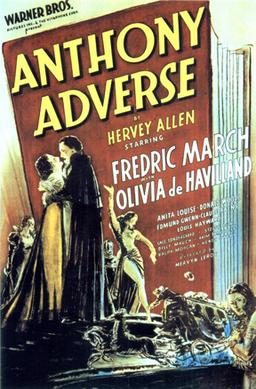

Anthony Adverse

Starring: Olivia de Havilland, Fredric March, Donald Woods
Director: Mervyn LeRoy, Michael Curtiz
Writer: Sheridan Gibney
Producer: Jack Warner, Hal B. Wallis
Anthony Adverse is a 1936 American epic historical drama film directed by Mervyn LeRoy and starring Fredric March and Olivia de Havilland. The screenplay by Sheridan Gibney draws elements of its plot from eight of the nine books in Hervey Allen's 1933 historical novel, Anthony Adverse. Abandoned at a convent as an infant, Anthony comes of age in the tumultuous turn of the 18th to the 19th century, the age of Napoleon.
Trivia
- Won the Academy Award for Best Supporting Actress.
- Won the Academy Award for Best Cinematography.
- Won the Academy Award for Best Film Editing.
- Won the Academy Award for Best Score, Adaptation or Treatment.
- Also nominated for: Academy Award for Best Picture; Academy Award for Best Production Design.
- Based on Anthony Adverse (1933 novel by Hervey Allen).
- Before casting Fredric March to costar with Olivia de Havilland, Warner Bros. considered Robert Donat, Leslie Howard, and George Brent for the title role.
- The studio during preproduction also intended to cast Errol Flynn in support of March, but Flynn became so popular with moviegoers after his performance in Captain Blood in 1935 that Warner Bros. assigned him to star instead in the 1936 film The Charge of the Light Brigade.
- Billy Mauch plays the young Anthony Adverse in the earlier scenes.
Previous Showings
2 Runs • 0 Festivals
Original Billings: 1 run (December 27, 1936)
Original Run: December 27, 1936 (Sunday - Tuesday)
All runs on record (2):
- December 27, 1936 (Sunday - Tuesday)Fredric March, Olivia de Havilland
- May 1 - 2, 1995w/ The Adventures of Robin Hood